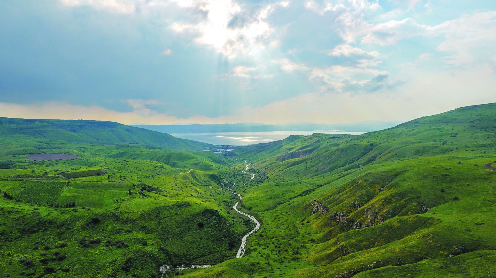
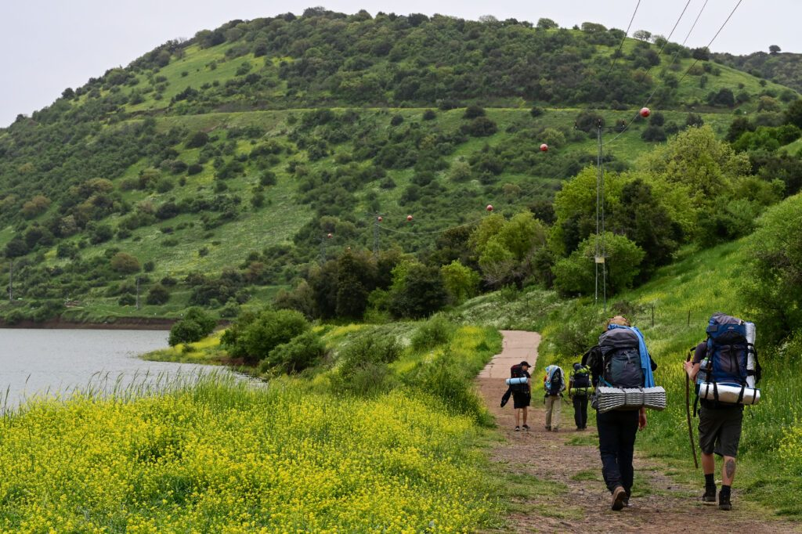

ליווי לוגיסטי לשביל הגולן
מפסגות החרמון ועד חופי הכנרת - 125 קילומטרים של נוף עוצר נשימה
על המסלול
שביל הגולן הוא אחד ממסלולי הטיול המרהיבים בישראל - 125 קילומטרים של טבע פראי המשתרע מפסגות החרמון המושלגות ועד לחופי הכנרת. המסלול חוצה את רמת הגולן לאורכה, ומציע למטיילים חוויה ייחודית שאין כמותה בארץ: שטחי בזלת וולקנית, שרידים ארכיאולוגיים מתקופות שונות, נחלים שוצפים ומפלי מים מרשימים.
לאורך הדרך תעברו ליד מפל הבניאס, נחל זוויתן, שמורת יהודייה ונחלים נוספים שמציעים טבילות מרעננות. באביב השטח מתכסה שטיח של פרחי בר - כלניות, נוריות ורקפות. תחלפו על פני חוות בקר ומרעות ירוקים, בתי כנסת עתיקים וביצורים מימי הביניים. המסלול נמשך בדרך כלל בין 4 ל-6 ימים, בהתאם לקצב ההליכה ולנקודות העצירה שתבחרו.
השירותים שלנו בשביל הגולן
הליווי הלוגיסטי לשביל הגולן דורש התמחות מיוחדת. דרכי הגישה ברמת הגולן מאתגרות ודורשות רכבי שטח עם הנעה כפולה, מקורות המים חלקם מתייבשים בקיץ ויש לתכנן בהתאם, ונקודות הלינה ממוקמות בפינות מרוחקות בין סלעי הבזלת.
שביל לבן מספקים ליווי לוגיסטי מלא לשביל הגולן שמותאם במיוחד לאתגרים של המסלול. הצוות שלנו מכיר כל שביל ודרך עפר ברמה, ודואג להקמת מחנות לינה במוקדים הנבחרים, עם ציוד מותאם ללילות הקרים של הגולן. הארוחות שלנו חמות ומשביעות - בדיוק מה שצריך אחרי יום הליכה ארוך ברוחות הצפון.

מה כלול בחבילה
חבילת הליווי הלוגיסטי לשביל הגולן כוללת את כל מה שצריך כדי שתוכלו להתרכז בהליכה ובנוף:
רכבי שטח מעבירים את התרמילים והציוד שלכם לתחנה הבאה, כולל דרכי עפר מאתגרות ברמת הגולן.
מחנה מוכן ומצויד מחכה לכם בסוף כל יום - אוהלים, מזרנים ושקי שינה מותאמים לקור הגולן.
ארוחות שטח טריות וחמות אחרי כל יום הליכה, עם בישול במקום ותפריט משביע ומזין.
אספקת מים ושתייה קרה בנקודות לאורך המסלול, כולל מילוי מימיות ובקבוקים.
ייעוץ מקצועי לגבי קטעי המסלול, נקודות עניין, מקורות מים פעילים וחלופות מומלצות.
צוות זמין סביב השעון לכל שאלה, בעיה או שינוי תוכניות לאורך כל המסלול.
למה שביל הגולן
שביל הגולן עם ליווי לוגיסטי הוא חוויה שכל מטייל ישראלי צריך לעבור. בניגוד לשביל ישראל הסואן, שביל הגולן מציע שקט ופרטיות - תוכלו ללכת שעות בלי לפגוש נפש חיה מלבד עדרי בקר ודרור הצוקים. מקורות המים לאורך המסלול הם מהמרשימים בארץ, עם מפלים שוצפים ובריכות סלע טבעיות שמזמינות טבילה.
הגיאולוגיה הוולקנית הייחודית של הגולן יוצרת נופים שאין כמותם - עמודי בזלת, מכתשים וסלעים שחורים שמנוגדים לירוק העז של הצמחייה. לאורך המסלול תגלו אתרים היסטוריים מרתקים: בתי כנסת עתיקים מהתקופה הרומית, מבצרים צלבניים ויישובים מתקופת התלמוד. העונות הטובות לטיול הן האביב (מרץ-מאי) והסתיו (אוקטובר-נובמבר), כאשר הליווי הלוגיסטי שלנו הופך את טיול שביל הגולן לנגיש ונוח גם למטיילים שלא רגילים לשאת ציוד כבד.
מוכנים לצאת לשביל הגולן?
צרו קשר עכשיו ונתאים לכם חבילת ליווי לוגיסטי מושלמת למסלול
דברו איתנו שלחו וואטסאפדברו איתנו עכשיו
השאירו פרטים ונחזור אליכם בהקדם, או שלחו לנו הודעה בוואטסאפ